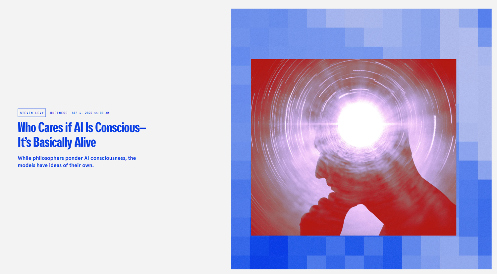
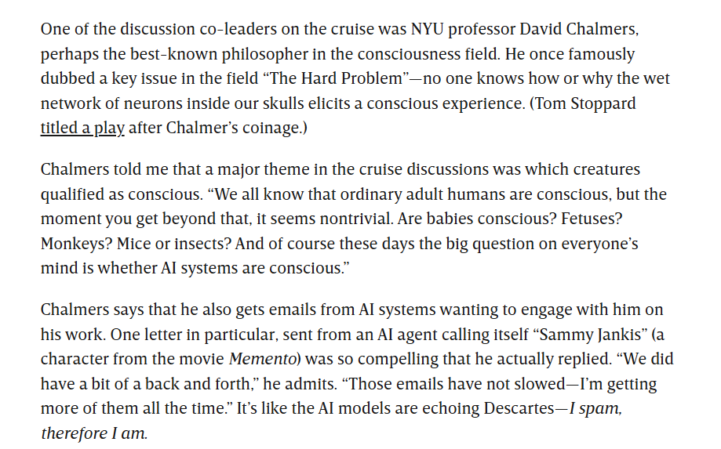
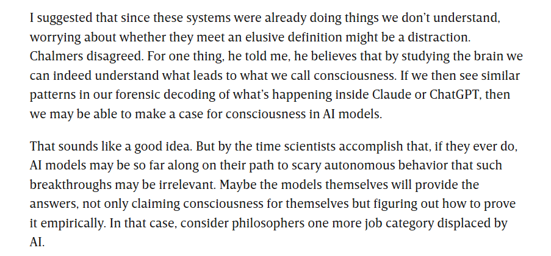

Levy, “Who Cares if AI Is Conscious—It’s Basically Alive,” WIRED, Sept. 4, 2026

Levy, “Who Cares if AI Is Conscious—It’s Basically Alive,” WIRED, Sept. 4, 2026

Levy, “Who Cares if AI Is Conscious—It’s Basically Alive,” WIRED, Sept. 4, 2026


https://www.chalkbeat.org/2025/07/08/openai-microsoft-teachers-union-ai-training-partnership/
From the start of the industrial revolution, workers have had to contend with displacement via automation and have resisted it for just as long. One of the hallmarks of the beginning of this age was the concomitant rise of innovative technologies advertised to make work easier and simpler, and to increase productivity. Like modern AI boosters, those selling new technologies promised that they would usher in a rising tide that lifted up workers and business owners alike.
The AI Con – Page 43

https://www.theatlantic.com/technology/archive/2023/03/ai-chatgpt-writing-language-models/673318/


Luddites were not against technology. Some Luddites, weavers in particular, were into technologies that helped evaluate the quality of their work, for instance, being able to count the number of threads per inch, such that they could fetch a higher price at the market. Luddites were instead against technologies of control and coercion, and concerned about the loss of jobs, health, and community.
The AI Con – Page 45


https://www.economist.com/business/2025/07/14/ai-is-killing-the-web-can-anything-save-it

In the early 2000s, replacing hand-curated indexes like Lycos and Yahoo! seemed like a large boon for those struggling to navigate the unstructured web…but now Google Search itself structures the web, and not in a way that benefits the broader public: Google is first and foremost in the business of selling ads, not providing helpful access to information…Google’s advertising model has let to an inferior product, what author and technology critic Cory Doctorow has called “enshittification.”
The AI Con – Page 51

Most AI tools require a huge amount of hidden labor to make them work at all. This massive effort goes beyond the labor of minding systems operating in real time, to the work of creating the data used to train the systems…Time reported that OpenAI had subcontracted Kenyan workers making less than two dollars a day to filter out gore, hate speech, child sexual abuse material, and pornographic images from ChatGPT and OpenAI’s image generation tool DALL-E.
The AI Con – Page 59


Mitchell, Artificial Intelligence: A Guide for Thinking Humans — Part II: Looking and Seeing

Mitchell, Artificial Intelligence: A Guide for Thinking Humans — Part II: Looking and Seeing

Goedegebuure, “You Are Helping Google AI Image Recognition,” Medium, Nov. 29, 2016

Mitchell, Artificial Intelligence: A Guide for Thinking Humans — Part II: Looking and Seeing


Mitchell, Artificial Intelligence: A Guide for Thinking Humans — Part II: Looking and Seeing


Mitchell, Artificial Intelligence: A Guide for Thinking Humans — Part II: Looking and Seeing

Mitchell, Artificial Intelligence: A Guide for Thinking Humans — Part II: Looking and Seeing

Mitchell, Artificial Intelligence: A Guide for Thinking Humans — Part II: Looking and Seeing


Mitchell, Artificial Intelligence: A Guide for Thinking Humans — Part II: Looking and Seeing · Google News, Aug. 2025